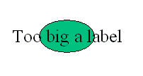

Fabien,
I think we both mean the same. Specifying units kind of forces specifying font faces to avoid things like this:-
 It might have worked if I'd used a very narrow font.
Not rescaling fonts only helps if you're expanding the model. If you're reducing the scale the text will always cause problems unless you change the scale of the font. Point sizes (1/72 inch) only work for height, not width, for proportional (not monospaced) fonts. I can't see anyone suggesting we always use courier if we're talking about round-cornered rectangles with circles on them for shapes. Unintelligent font substitution seems inevitable (how do you know how many units wide "1,2-dipalmitoylglycerol" is in Agfa Rotis Semisans when you don't have that font? If you have the font you don't have to do the substitution.) So I guess that we're going to have the problems of text overflowing where we want it to be when the models are interchanged anyway.
As John said, we should be able to ignore what the tools can't handle. I don't know that it's worth the effort of being able to specify John's red rectangles with black borders if the Virtual Cell, when it imports that layout, will say, "Herbert wanted red rects with black borders...bummer...looks like little yellow circles it is" if no-one will actually implement them. It seems like agreement has been reached that we should do it anyway while I've been off-line.
Using someone else's fully rendered diagrams doesn't cut it. I want to be able to show fluxes as thicker/thinner lines at various time points in a model. For this I need to be able to render the diagrams myself. There's also the problem of being able to alter the model easily by adding just one more inhibitor/promoter/inducer/repressor/etc. A tool that does the rendering should alow us to edit existing diagrams (and models) easily. One that uses someone else's bitmap means starting from scratch. Or maybe everyone else creates perfect models first time?
Hugh Spence
GSK Scientific Computing and Mathematical Modelling
Medicines Research Centre
Gunnels Wood Road
Stevenage
UK
SG1 2NY
"Fabien Campagne" <campagne@physbio.mssm.edu>
Sent by: owner-sbml-discuss@its.caltech.edu
23-May-2003 01:09
To: sbml-discuss
cc:
Subject: [sbml-discuss] DWG Goals, Constraints, etc.
Hi,
I liked the forum (a lot more manageable than email for me), but since
it has been dropped, I am reposting this below.
http://caboy.uchc.edu/SBML/topic.asp?TOPIC_ID=3
Let me know if you find this document useful, I am experimenting
to see if this pattern can help clarify the discussions on the list.
Fabien
I tried here to summarize the objective and constraints of the diagram
extensions. This will help me (and hopefully others) understand what the
issues are. We can then reference the goals, constraints and issues in
subsequent discussions. I believe that if we agree on goals, constraints
and use scenarios, the design of the extensions will be a lot easier,
because we will all be speaking about the same thing.
Goal:
------
1. Provide a mechanism so that layouts created in one modeling environment
can be used in another modeling in a relatively straightforward manner. We
want to avoid users moving graphical elements around every time they
import an SBML model in a target environment.
Typical Use Scenario:
---------------------
1. Creating a model in JDesigner, exporting to SBML, importing into VCell.
[layout is built interactively by the modeler using JDesigner.]
2. Exporting an SBML model from SigPath, importing in Vcell or JDesigner.
[the layout is automatically generated.]
Constraint(s):
--------------
1. Avoid using information about how the graphical elements of the diagram
will be rendered (support layered approach suggested by Sven Shale on
smbl-discuss. This constraint is applicable to the second layer.)
2. Minimize impact on existing SBML-aware software. Rationale: The
extension is unlikely to be implemented (and therefore used) if it
requires costly software adaptations and tests of the new behavior.
Current issues:
-----------------
1. Should we specify units for positions of graphical elements of the
diagram on the page? (Herbert Sauro)
2. Should we be forcing font faces, font sizes, colours, or shapes for
types of molecules on users (Hugh Spence), i.e., as an implicit convention
across the entire set of possible SBML files, so that each tool knows
exactly what to expect in terms of font size and can render the same
layout as all the other tools will. (Fabien Campagne, I rephrased the last
part of the sentence, I hope both mean the same, otherwise, please
elaborate).
3. There seems to be an extension proposed by the European Media
Laboratory in circulation. Where can I read the proposal? (Fabien
Campagne).
Fabien Campagne
http://icb.mssm.edu Institute for Computational Biomedicine
phone: (212)-241-0860 Box 1218, Mount Sinai School of Medicine,
fax: (212)-860-3369 One Gustave L. Levy Place,
--------------------- New York, NY 10029-6574 -----------------